在经历了22年的种种后 又是久违的上海孤独传说！堂堂回归！
最近感觉自己表达欲越发下降了，于是赶着刚刚去完来写写
依旧流水账 且一切都只是我的个人主观感受 没有专业知识支撑 大概没什么参考价值
9：30 A.M.
在一切尘埃落定后 jjpd终于可以出门瞎逛了
其实刚开学那会儿就想去了但是最终还是被每日图书馆上工牢牢锁住没能成行 这次遂第一时间订票预约一条龙
经过东方明珠的时候看到不知道是中学生还是什么 总之乌泱泱一大片穿着校服的小孩 令人感叹
最近上海的花都开的特别好 就算是阴雨连绵的天气也遮不住
下天桥的电梯自动提供了完美机位运镜 真的摄人心魄

第二次来已是轻车熟路 结果就是到的太早在风中干等 进去的时候还刚好碰上一个旅游团还是不知道什么东西 突然人多（
进去后便直奔期待已久的绝美之境 从看到宣传就超期待 不仅因为本身就对罗马希腊等等历史感兴趣 可能还有一部分原因来自hades（） 但总之jjpd超急
顺带再提一嘴 回来之后手贱去搜了下相关评价 只能说我的观点大概和大多数人都有偏差 所以对于我的点评请理性看待
整个展分为了一楼和三楼两个展厅，但是无论哪边的基调都是昏暗。黑色的布料和点光很成功地控制了光线的散射，让展品成为了各种意义上的焦点。而这种光线也成功营造出了肃穆、甚至神圣的氛围，踏入的一瞬间就感觉自己内心像被外力控制一般宁静下来（虽然这么形容可能有些中二但当时的确是这么个感觉）而看到展品之后更是开始在内心狂哇不止
没有什么可点评的 就是极致的美的体验

然后就开始感叹：这种褶皱是雕塑可以做出来的吗我的天啊……这种质感……好美……让我学学……

不过虽然是拆成了两个展厅 但实际上一楼更像是起到楔子的作用 所以马上跑到三楼 不过在途径二楼的时候被另一个展的在地作品（我不确定能不能这么叫总之姑且这么写）冲击到了 所以让我先在这里插一嘴

怎么说呢 这种色彩和线条的组合 就是会给人一种天生的冲击力
经过它的时候就是会感觉到一种速度感和眩晕感 非常神奇
插叙先写到这里 接下来就来介绍一下三楼展厅好了
同样 一进门就是寂静与黑暗 连工作人员的身形也变得模糊 只有几件展品散着微光
然后这里 就是让我对这次布展一下子评分拉满的地方
在我端详完一幅壁画后 我一个扭头 就和他来了个对视
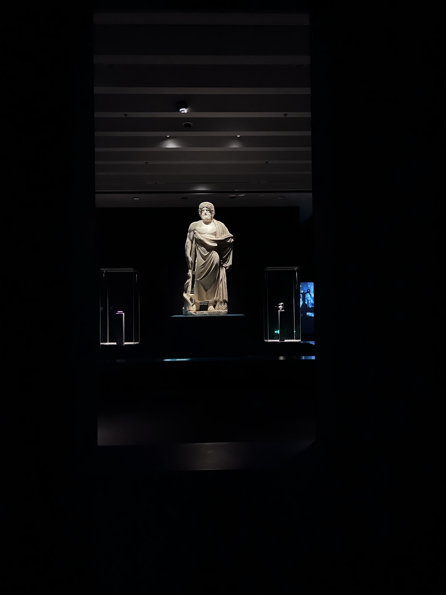
照片实在是难以呈现我当时所感受到的震撼 怎么说呢 jjpd当时就感觉脑子嗡了一下 然后就愣在了当场
更加 怎么说 可能也不算精妙吧但的确起到了作用的是 此时此刻 站在这里 我只能看见他的全貌 却不能近距离进一步观察 而我又不是那种可以先跳过其他展品直奔下一个地点的性格 这就导致在后续的观赏中 我无法磨灭那一瞬间的印象 而必须携着那种想要进一步观察的冲动
怎么说呢 就 哎呀这个布展我真的太喜欢了
虽然我算是个唯物主义者 但那一瞬间 就真的有一种 看到了神明或某种高于人力的力量的感觉
非常震撼
不过姑且还是让我按照观赏顺序接着讲完 展出的各种壁画也很有意思 各种裂痕和磨损反倒让作品更有氛围 而联想到这些展品曾经所拥有的历史 以及庞贝城最后的命运 就更加令人感叹唏嘘了

而后 在绕过多件展品后 我终于走到了那间我在一开始凭借狭长窗口窥见一角的展室 能够仔细端详之前被震撼到的雕塑
莫名有一种神圣的感觉 难以形容
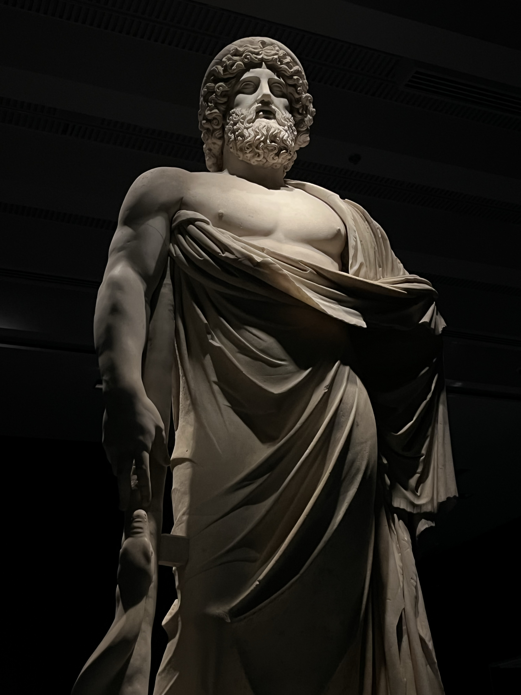
顺便再感叹一下 这个褶皱真的太牛了（开始了
然后在这间展室内展出的都是一些诸如杯碗灯具的日常用品 看着这些展品 很难不联想到当时生活的人们在灾难来临的前一刻都过着怎样的生活
甚至还有烘焙模具 就 怎么说呢 想到这种事情真的很容易感慨 虽然我也很难说明到底在感慨什么
然后还见到了水仙鼻祖（？） 不得不说 很清秀 很清秀

而且现在才发现原来他把倒影也画出来了 哇（在哇什么
然后就不得不提一件爆笑事情了（虽然好像也不是那么爆笑） 总之我把前面几个展室按顺序逛完之后就打算去下一个 但是不知道为什么里面有一群看着非常专业的人在打光拍摄 于是怂逼的我也不知道该不该过去 遂继续在前面的展室里逗留 然后伏笔这就用上了 还记得我刚进场时提到的旅游团吗（姑且称为旅游团吧虽然我也不知道他们到底是什么来头） 前面因为他们有跟一个解说走的比较慢所以我就把他们超过了 现在因为我在一直逗留所以他们也跟上了我的进度（） 然后果不其然 他们也看到了那一群拍摄的人 一大堆人也就直接卡在了门口不知道该不该过去 气氛真的微妙且好笑（笑点到底在哪
而这一短暂僵持的结果自然是拍摄的人退到一边 而我也便默默地跟着一起过去 然后继续开哇（什么形容
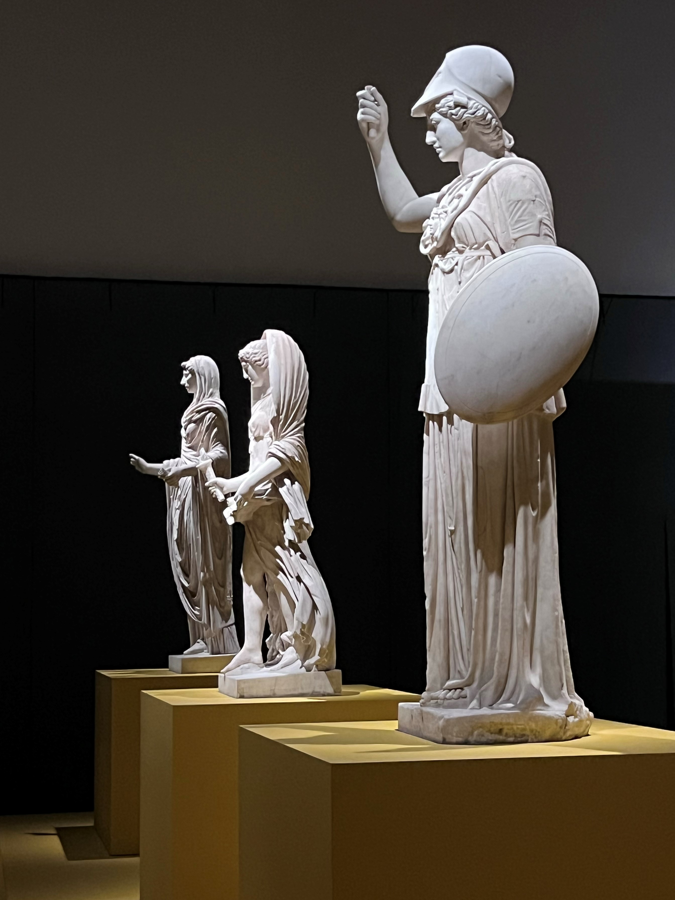
很喜欢这个角度于是拍了，hades玩太多结果就是看到雅典娜就想到神圣冲刺（sorry
最后也就到了这个展览的尾声了 千言万语汇成一句 阿波罗和维纳斯真的是两大看板（什么
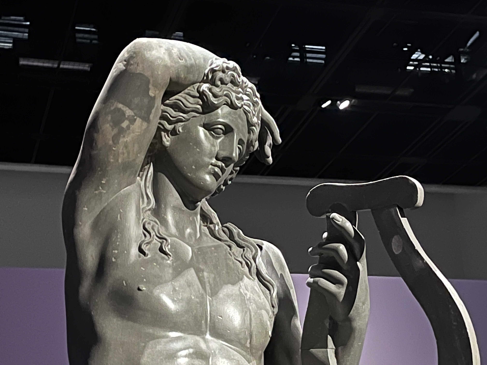
青铜材质的确会赋予作品不一样的气质 就感觉五官的立体感被一下子强化了好多
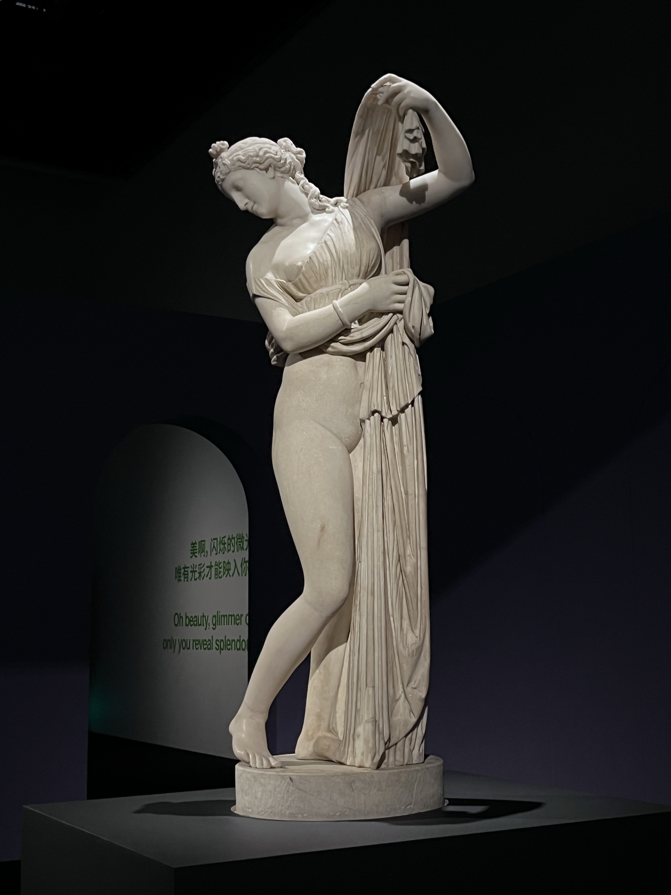
两座材质不同氛围不同的雕塑一左一右摆在那边真的非常有冲击力 而且绕到后面的时候发现刚好光源会落在人物头顶的轮廓上 就 真的好喜欢
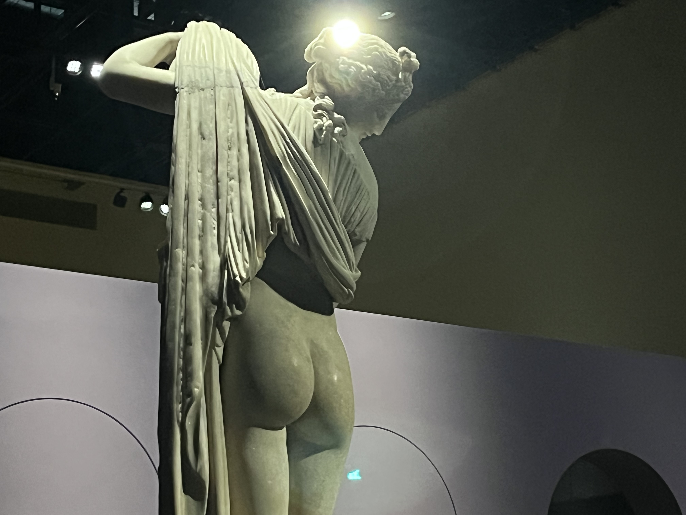
最后再吐槽一下这个房间 文字介绍的那个颜色我真的无语了 首先墙面就是淡紫色了 你文字还用的纯白 然后光再那么一打 简直是看不清中的看不清 难绷
到此整个绝美之境展览就结束惹 感觉整个展看下来jjpd就是两个字：失语。因为它并没有什么可解读的东西，就是纯粹的美丽。人体的美丽，人生的美丽，等等等等。
就是和它的题目一样，绝美之境。没有任何别的，只有美丽。
而对于这种最原始、最纯粹的美丽，确实也没有什么话能够评价或形容了。
顺带一提 三楼展厅门口还立了个展板介绍了一下古罗马历史以及和古中国的交流等等等等 当时第一反应：哇 丝路组厨要狂喜了（
一日养老院 终身养老院吧大概
anyway 第一部分到此结束 接下来请一转现代————
11：00 A.M.
怎么说呢 和上个展相比 泰特美术馆这个展的风格可以说是迥然不同了
极度的现代和抽象 感觉在表现美之外更多地聚焦于哲学和人的思想 又或者说 更专注于探索人类视觉体验的边界
但的确也有一种独特的魅力
首先就是这副封面作品 迷幻的立体感 而且这种色块组合法让我想起自己的dif（开始了

每次看到这种作品都会觉得大脑真的很神秘 进而想到其实我们看到的东西都是经由大脑ps（？）过的成品 就 感觉其实人永远无法抵达真正的真实（开始抽象
然后 感觉这个展在一定程度上其实也呼应了同源（？）的上一个展？光影的变化使得艺术作品产生了全新的效果 很神奇而迷人

然后就是大概可以算是这个展览里我最喜欢的作品前三名的一个设计 狭小的房间被满溢的蓝色填满 看到的第一眼就感觉自己置身深海
悲しみの海に沈んだ私.mp3（不是
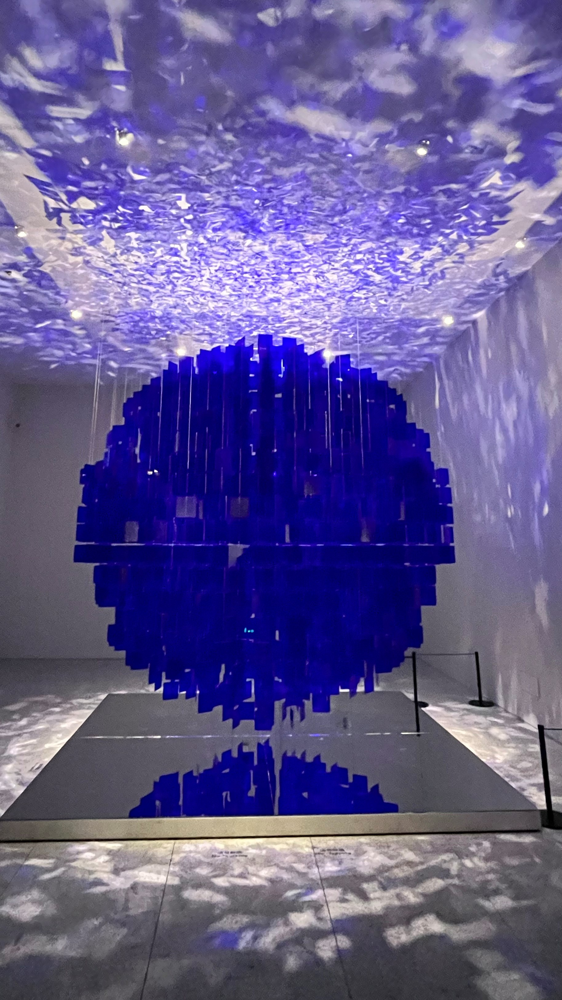
而且这个破碎的光影效果让我莫名想起巴别塔之茧最后凡妮莎碎裂的场景 就 真的很有感觉
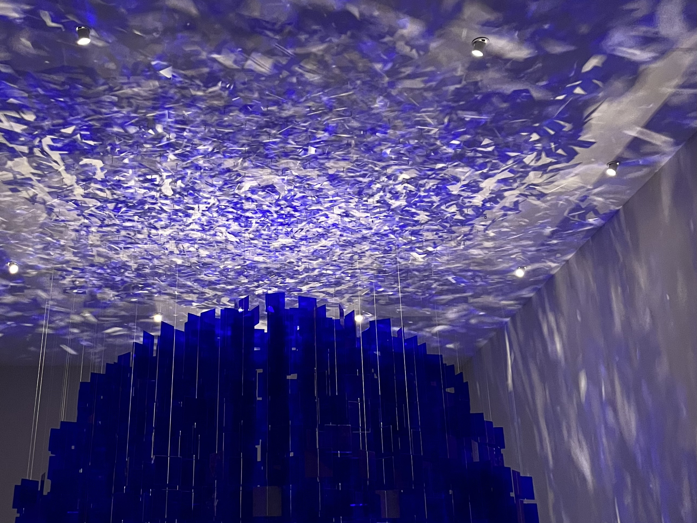
接下来就看到了很多非常神奇的视觉效果 感觉这个部分的作品相比创作（指艺术意义）更像是在进行一些实验 就 很有意思 比如下面这幅

正如它的名字一样 明明是静态的作品 但是观者移动的时候却会呈现出一种波动效果 就像某种声波 又或是心电图 而这个配色又让这种视觉效果带上了更为冲击的氛围 忍不住多看几眼
而底下这幅作品则是莫名给我一种 很舒适的感觉 明明非常抽象 但就是不管是配色还是形态上都让人产生一种 cozy的感觉（为什么唐突英文 我也不知道
也许是想起了各种晚会上的彩纸礼炮以及以前养仓鼠时会用到的软木屑（这两个也差太多了

然后就是经典的jjpd学配色环节 真的好喜欢这种高饱和配色 搭上干净利落的几何图形更喜欢了
什么数据可视化（
作品名也非常的简单直白而生草（

然后就看到一个 也不能说很有意思但的确有点意思的作品 感觉这个作品就是把艺术性中观者的互动的占比提到了一种极大的占比（纯属我个人观点毫无理论支持

然后透过透镜就看到这两个小哥 感觉很有意思就拍下来了
顺带一提因为进度差不多然后观展路线也差不多 所以时不时就能听到两个人一边看一边讨论 还 挺有意思的
这幅我也很喜欢 就觉得这个曲线和色彩运用很牛 非常完美地展现出了热浪的扭曲感（盯久了甚至感觉有点晕
太阳意象里的那圈蓝色也很巧妙我觉得

然后 很有意思的一个 巧合（？） 上次看泰特美术馆的光影主题展览的时候 有一幅画我以为是在布展时特意做了光影效果呼应结果只是地面图案 而这次有一件相似的作品但真的是光影

而后因为前段时间在给dif相关的逆银拍立得设计工艺 所以导致一凑近仔细看就开始：噢 这里加了白墨 然后这里加了逆向 原来如此 感觉可以学一学
笑死 什么美工魔怔

最后 这一部分有个作品虽然图片完全看不出来它有什么特别之处但我要提一提

首先 这个名字我就不吐槽了（感觉这个时期的创作者都是突出一个便宜起名） 其次整件作品的布置其实也非常普通 普通到觉得这是什么玩意的程度
但就在我瞟了几眼打算走的时候 我直接愣住了
随着我的移动 那些方块呈现出了非常明显的震动 而当我停下时 它们的运动也随之停止
真的有一瞬间怀疑我是不是眼花了（
于是我就开始（在外人看起来大概）非常憨的在它面前晃来晃去走来走去（
虽然我很想尝试分析一下原理但就算反反复复看我也没能很清楚地理解到底是为什么 感觉上就是因为在移动的过程中细线会不断和方块边缘重合而导致了错觉 但还是很难想通 好神奇
然后此时我走在刚刚那两个小哥前面 当我转去看其他作品的时候余光瞥到那俩人刚好走到这件作品前面
我：等一个开始和我一样左右横跳
两个小哥中的一个：起初毫无反应打算走人 走了几步 停下 转身 返回
我：笑死 完全一致了
之后转过拐角就进了一个类似放映厅的地方 似乎是在轮播当时的一些实验性质的影片 看了其中一个 不记得作者了只记得影片名字叫《圆》 看的时候满脑子都是：哇 是古早音游
然后开始在心里虚空按谱 笑死
顺便 进入下一展室的时候经过了一小段莫名其妙的空白区域（？） 然后虽然也不知道为什么但还是拍了（开始了

下一部分就是一些带上了动态的展品 话说回来突然发现整个展览的轨迹就是从二维→二维展现三维效果→二维和三维结合→二维和运动/声音/光影结合→三维→三维和运动/声音/光影结合 这样回味一下还挺有意思的整个脉络
首先就是这个东西 很喜欢 有种电锯人的感觉（什么形容
在无秩序和混乱中却莫名又有一种稳定（开始抽象
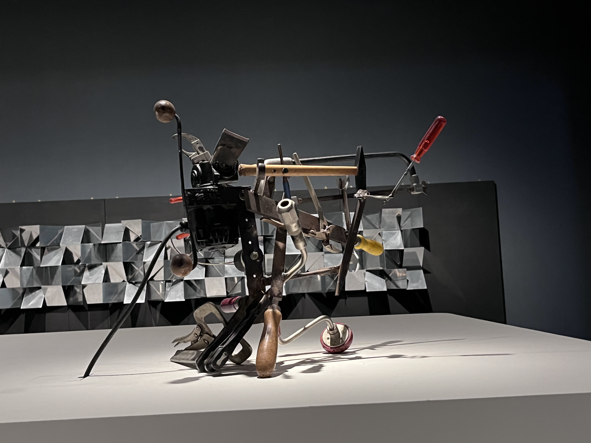
一开始在看其他作品的时候就一直在想什么东西在咚咚响（） 看到的时候 怎么说 确实有一种混乱的冲击感
突出一个chaos 动起来的时候真的很mindcrush（？
然后在看介绍的时候 jjpd：捕捉关键词 nt 哪里有nt（开始了

下一个大概是我这个展里最喜欢的一件作品了 光影的变换真的很迷人
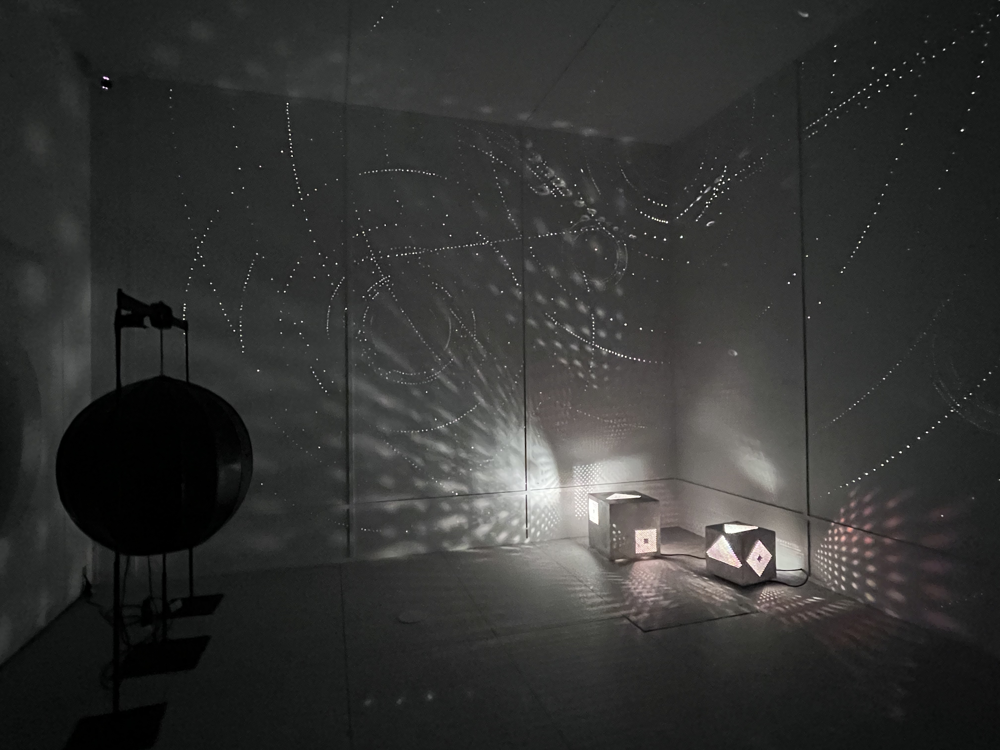
再一次 没法把视频传上来真的是遗憾中的遗憾！照片完全还原不出我当时看到这个房间时的震撼 脑子里只剩下语气词了属于是 第一反应是想到狒狒水晶都的占星室相关场景 就 真的感觉自己置身星海
难以言喻的美丽 我建议氛围灯都这么做（开始了
以及 这个展室里的墙面是由红蓝两色的像素点构成的 想到大概也是什么作品就看了一眼 果然（
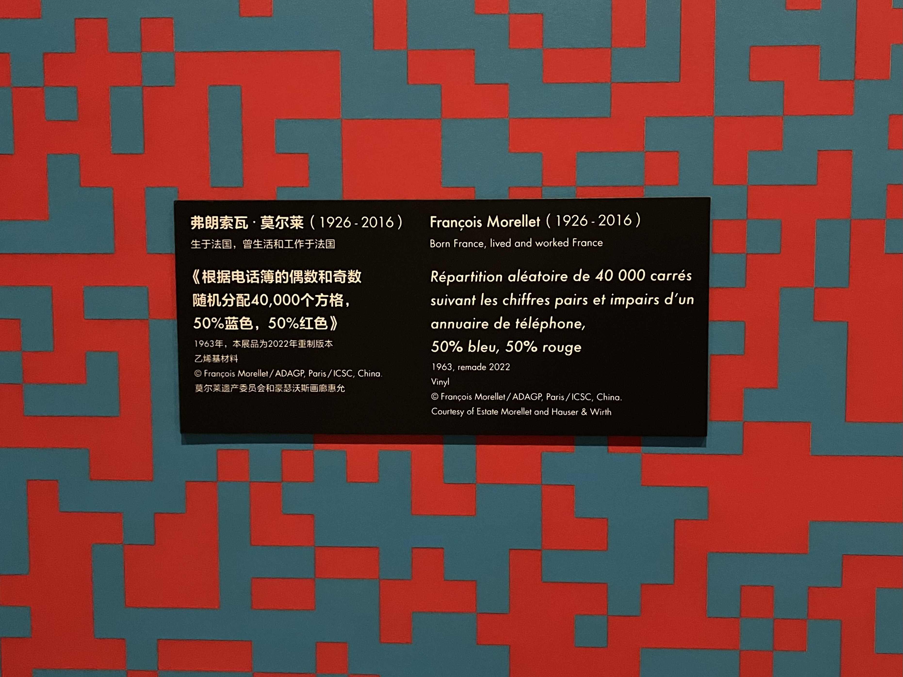
顺带一提 还有一件展品是矗立的泡泡机 标题叫作云之峡谷
怎么说呢 这种反差 不得不说 很有意思
而这个展览到这里也到了尾声 而看完我感觉也很难用一两个词来形容它
和第一个展具象的美不同 它极端的抽象让每一幅作品展现出的意境注定会随着观者的差异而出现偏移 甚至可能作者想要表达的东西最终也无法传达到位
但这种发散性反而让它变得吸引人
感觉有时候看看这种也挺好的 虽然我说不出哪里有意思 但确实很有意思（
那么 接下来就到了本次美术馆半日游的第三站————意大利家具城（what
Let’s go!
11：50 A.M.
怎么说呢 一上四楼就有种进了亮色版宜家+充气城堡的感觉（
气氛和前两个展完全不一样 不仅布展没有非常明显的线路引导 整体感觉也非常轻松随意

首先就是这个沙发 非常适合棒球爱好者了

题外话之 突然发现这个工作室的名字 不好的回忆涌上心头了（
然后看到了特色拍照区（？） 很喜欢这个颜色 长春花蓝suki（应该是吧如果我叫错了就是我的锅

然后就看到了本次展览的整蛊mvp（

真的太乐了 只能说 很牛
然后还看到了这个玩意 因为旁边甚至有个鼓风机一样的东西把毛发吹动 所以看到的时候其实有心下一惊：卧槽什么玩意
再看一眼还是：卧槽什么玩意

话说这个名字 很贴切了属于是
这个形象总感觉很眼熟在什么作品里见过 但是想不起来 抽象
而展览的尽头是巨大异色仙人刺（

虽然我这个展只列了几个展品 但其实规模还挺大的 只不过我很多东西没有仔细看就走了
感觉有不少可以拿来当装修参考（
不过也有的设计就是真的很抽象 非常的 前卫而现代（
这就是时尚吧大概
逛完之后顺便去了下顶楼露台 风超大 然后不知道为什么餐厅居然预约满了且有好几个人举着各种logo牌牌像是准备接待引导 jjpd摸不着头脑（

然后下楼的时候就看到之前紧闭的报告厅里涌出一大堆西装革履的成熟人士（。） 还有各种工作人员举着和楼上一样的牌牌在引导什么顶楼合影之类的 jjpd也不敢死盯着人家挂着的身份牌看到底是什么活动 只能说 非常的冲击
真的很好奇到底是什么人！
插曲到此结束，接下来就到了最后一部分！也是本次jjpd最喜欢的作品之一！请看————
0：30 P.M.
说到徐冰 就不得不提jjpd上学期的伤心事了
之前因为看到了宣传+刚好看了关注的一个up和徐冰的对谈 就非常期待他的个人展出 趁着国庆假光速买了票and申请出校
然后在兴冲冲坐上地铁的时候 看到陆家嘴多了几个中风险区（
jjpd：呃呃
虽然浦东美术馆在的地方并没有什么影响 但是地铁站就在中风险区的酒店旁边（
jjpd：……
悲伤逆流成河的jjpd在换乘站中山公园下了车 非常的惆怅且迷茫 想着要不换个地方去逛 结果发现好像无一例外地都在那附近
jjpd：心碎
遭受打击的jjpd遂坐到了一旁公园的长椅上开始仰望天空思考人生 并同时想到：笑死 长椅构图（
而在被强烈的悲伤裹挟后 jjpd反手直接订了一个学校旁边的ktv包间（
一款 既然我这么伤心 那不如去进行代餐歌曲联唱 情感渲染加倍（
不过在回去的路上本着不喊室友不太好的原则还是说了声 室友：？
然后一转宿舍团建 笑死 某种意义上也冲淡了jjpd的悲伤
而之后就是再没机会出校（各种原因） jjpd直接错过了整个展览 哈哈
所以这次看到引力剧场还在布展非常欣慰（？
前事就说到这里。因为看展之前就已经了解过徐冰作品的主题了所以非常期待看到实物（顺带一提逛的时候我走反了看到最后才看到引言真的笑死）整个作品就设立在馆内的天井 所以其实每逛一个展都会同时从不同角度观看到这件作品 非常有意思


照片完全无法呈现出亲眼所见时的心灵震颤 除了太牛了什么都说不出来
整个作品本身的氛围（？）无论是规模还是镜面效果都已经非常震撼了 而在看到设计稿的时候就更加觉得 啧 到底是怎么想出来的
首先就是这种中英文结合的字体设计 真的 超绝强大 什么样的脑子才能想出来这种东西 真的是天才一般的构想
然后整个作品空间上的张力也是一绝 就是那种下坠感 陷落感 在观看的时候真的会感觉自己要一起坠入那个漩涡中
而在看过两种“文字”的对照后真的会有恍然大悟的感觉 就 感觉是一种 “一本正经地胡说八道”的最高境界了（
好牛
而我越觉得好牛就越开始遗憾当时没看成更加完整的个展 kuso呃呃呃呃

而且就 他想要表达的想法 我觉得也非常戳我
真正的理想视角是无法达到的 我们所见的一切都存在着一定程度的偏差（怎么好像和我当时看第二个展时候的想法重合了），而正是这种偏差让我们相互拉扯又和自己拉扯。
就 真的非常喜欢
至此，jjpd的浦东美术馆半日游也就结束了（呱唧呱唧
非常的快乐，非常的享受，逛完真的好爽
下次还来.jpg
1：30 P.M.
依旧是惯例在一楼的咖啡店恰了午饭 本来想看看有无好看周边买买但这次出的东西着实不太戳我（
对我来说印章和火漆套装都太不实用了（
遗憾
在出去之后 看时间还早 jjpd遂顺路拐去了另一个一直很想去的地方 那就是
高达基地 哈哈（
走过去不到一公里但是在商场里面找了好久 直到转头看到一台扎古（
不得不说 很难不心动！就 真的很难不心动（词穷
还好我高达还没补完 对与没看过的机体一概不感兴趣（虽然帅是真的很帅（
本来想看看有无风灵结果果然没有 虽然有的话我也不会买就是了 十算真的难绷（
但为什么感觉他的独角兽比我拼的小呢 很神秘
然后全店其他人都是三三两两的男性胶佬相约品鉴（感觉大家都默认在这里只看不买吧大概（也许可能有什么活动会打折吧我也不是很懂）） 然后我就混迹其中 笑死
主要是被一大堆比我高出一个头的大只佬站在两边真的很有压迫感（不要用这种形容啊！
打扰了捏（
但是胶真的很帅（
然后看到商场里有书店又习惯性的去看了一眼 怎么说呢 感觉布局不如……虹桥天街……
但是看到了这本书 统计人情不自禁地拍了

这个封面设计也很有意思 让我学学
总之，jjpd久违地逛到此就完美结束了！不得不说搬到中北之后交通确实方便了很多 感叹
逛完又要回归图书馆宿舍两点一线了 开始爆肝
不过 虽然孤独传说也很快乐 但还是希望jjpd有天去美术馆可以不孤独传说（
怎么说呢 发现jjpd虽然一开始看展的目的是为了找代餐 但现在已经更像是单纯的爱好了
挺好 看展真的好快乐！看就完事了！